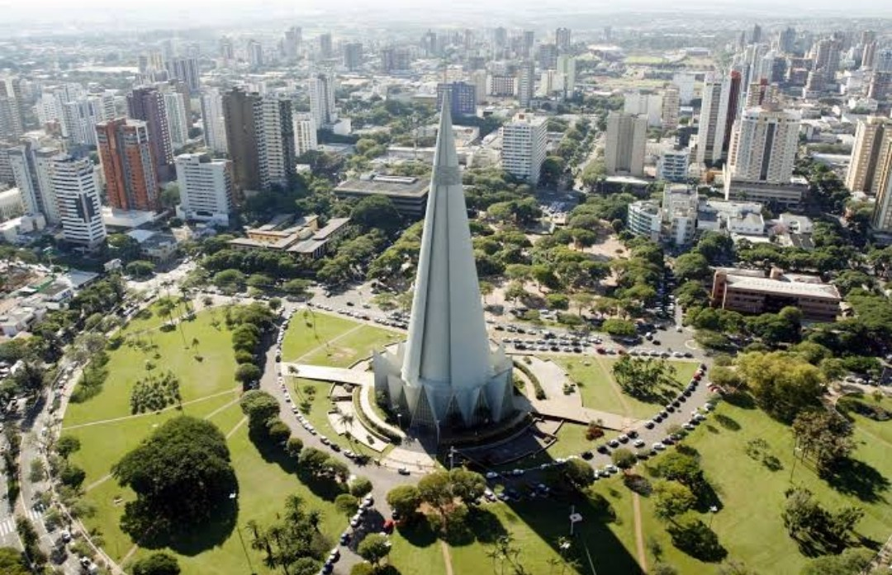
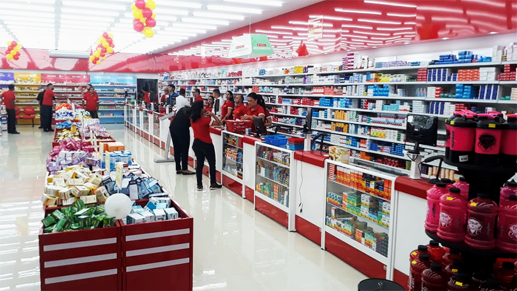

de Maringá
de MaringáPrefeitura da cidade de Maringá decide prorrogar restrições até 5 de julho
O decreto foi publicado nesta manhã de segunda-feira(28). Ela mantém o toque de recolher e determina o fechamento de atividades aos domingos.
A prefeitura de Maringá prorrogou o decreto com as medidas restritivas até dia 5 de julho (próxima segunda-feira), por conta do novo coronavírus. A publicação da decisão ocorreu nesta segunda-feira(28).
Com esta decisão, o toque de recolher continua sendo entre as 21h e 5h, assim como continua a proibição de venda de bebidas alcoólicas no período. Aos domingos é permitido o funcionamento de atividades essenciais, exceto mercados.
Veja quais as atividades que estão autorizadas a funcionar aos domingos:
Farmácias;
Distribuidoras de água e gás;
Postos de combustíveis, com exceção das lojas de conveniência;
Clínicas médicas e veterinárias para atendimento de urgência e emergência;
Segurança privada;
Prestação de serviços de natureza emergencial.
